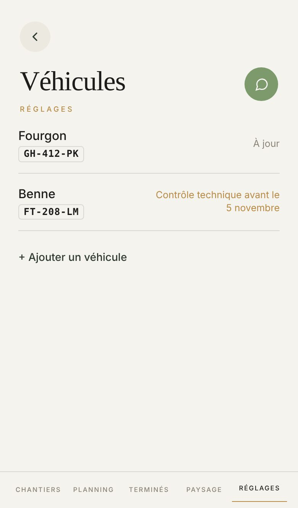
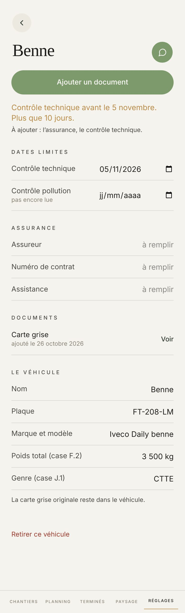
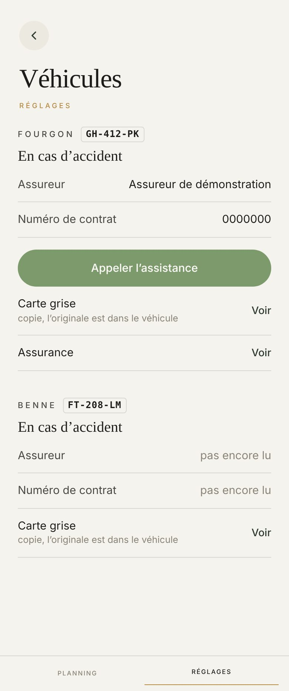
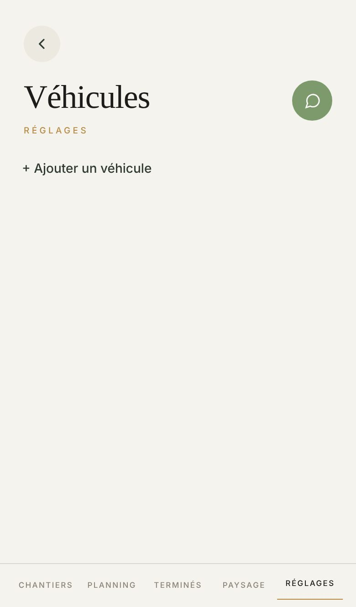

Proposé
Aujourd'hui




Ce qui change
- Chaque camion porte sa couleur devant son nom : vert à jour, or quinze jours avant (votre doré du 14 octobre), rouge quand c'est dépassé. La phrase garde ses mots : « Contrôle technique avant le 5 novembre ».
- La ligne dit aussi ce qui manque, en ambre : « À ajouter : l’assurance ». Aujourd'hui seule la fiche le dit.
- Le nom passe en gras, la plaque à côté de lui.
- Touchez une ligne : sa fiche s'ouvre dans le même téléphone, le rond du haut ramène à la liste. À droite, l'écran d'aujourd'hui suit.
- Sur la fiche, la prochaine date se lit sur un carré, avec ce qui reste : « Plus que 10 jours », « Dépassé depuis 4 jours ».
- Les trois papiers sont toujours nommés : présent avec sa date et Voir, manquant en ambre avec Ajouter. La ligne « À ajouter : … » de la fiche s'y range.
- Ajouter un véhicule et Ajouter un document deviennent le seul bouton plein, au-dessus de la barre.
- Les titres de paquet en or comme sur le sommaire, les libellés des cases en toutes lettres.
- Sans véhicule, une phrase dit quoi faire : « Ajoutez la carte grise : Atlas y lit la plaque, le modèle et le poids. »
- Chez le salarié, Appeler l’assistance reste sous l'assurance, en vert clair au lieu de plein : il y en a un par camion.
Ce qui ne bouge pas
- Le titre de la feuille dit quoi photographier, puis Photothèque, Prendre une photo, Choisir un fichier. Touchez Ajouter un document puis une source : Atlas lit, les cases se remplissent en doré et le doré s'efface.
- Quand Atlas ne reconnaît pas le papier, il demande « Quel est ce document ? » et ne range rien au hasard.
- Toute case se corrige à la main, et « d’après la carte grise » disparaît de la case touchée.
- La contre-visite n'apparaît que si le procès-verbal en pose une ; la carte grise tout en bas, l'originale dans le véhicule.
- Retirer ce véhicule, sa feuille et « Garder ».
- Le salarié lit, le patron seul change : sans rond de l'assistant, sans fiche, sans le procès-verbal, avec sa barre à deux mots.
À trancher
- Appeler l’assistance chez le salarié : vert clair comme ici, ou plein comme aujourd'hui (un par camion).